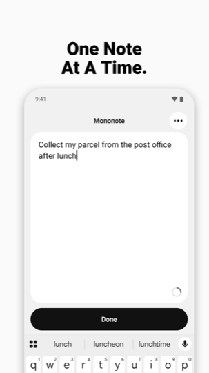
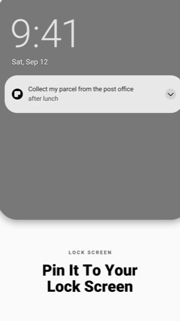
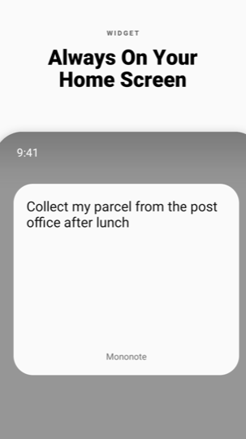

Open the app and write down anything you want your future self to remember — a to-do, a reminder, a motivational line. One note. No folders, no feeds, no noise.
Keep it visible on your home screen with a widget, or pin it to your lock screen as an always-on note when it is something more urgent.



Why one note
Most notes apps give you a list that grows until you stop reading it. Mononote shows exactly one active note. When you are done with it, archive it or delete it, and a blank note is ready for whatever comes next. Nothing else competes for your attention.
Always in sight
Home screen widget
Your note on a clean card, in every size, updating the moment you finish typing. Tap the widget to jump into the editor.
Lock screen note
Pin the note to your lock screen so you see it every time you pick up your phone.
Status bar and shade
A live note in your status bar and notification shade, so it travels with you all day — and you can edit it straight from the notification.
Write without distractions
- One large, calm text field and a single Done button.
- No formatting toolbar, no checkboxes, no titles to fill in.
- Autosave as you type — there is no save button to forget.
- Four text sizes, and light, dark or follow-the-system themes.
- Black and white by design. No palette to pick, nothing to tune.
Archive, do not hoard
- Archive a finished note with one tap and start fresh.
- Every archived note stays searchable, and you can restore any of them.
- The archive is free and unlimited.
- Delete for good whenever you want.
Private by design
- Your note is encrypted on your device with a key held in the Android Keystore, hardware-backed on devices that support it.
- It never leaves your phone. When you pin it to the lock screen or add the widget, Android's own system UI shows it outside Mononote.
- No account, no sign-up, no cloud.
- Works completely offline, in airplane mode, forever.
- No ads and no advertising trackers.
- We cannot read your note, because it never reaches us.
- Export and import your notes yourself when you move to a new phone.
The full detail is in the privacy policy, and Delete my data explains how to have anything we hold removed.
Mononote Pro
Everything above is free: the note, the widget in every size, the lock screen note, the unlimited archive, export and import. Pro is purely additive — monospace and serif type, paper tints, true black, alternate icons, widget styling, several widgets bound to different archived notes and a biometric app lock. One payment, yours forever. No subscription, no ads.
Questions
Does it really only hold one note?
One active note at a time, yes. That is the point. Archived notes are kept and can be restored.
How long can a note be?
Up to 180 characters. It is written to be read at a glance from a lock screen, not to become a document.
Can I put a note on my Android lock screen?
Yes. Mononote pins your note above the lock screen clock as an ongoing note you can dismiss when you are finished. On Android 16 and newer you can turn on Live Updates for it.
Do I need an account?
No. No email, no password, no cloud.
Will it sync to my other phone?
Not today. Mononote is deliberately a single-device, on-device app. Use Export and Import to carry your notes across.
Does it work without internet?
Always.
Good for
One thing today. A shopping list you actually read. A phone number you must not lose. The gym time. A parcel to collect. Your intention for the day. An affirmation you need in front of you. The one task you keep forgetting.
One note at a time. Write it down, put it where you will see it, and get on with your day.